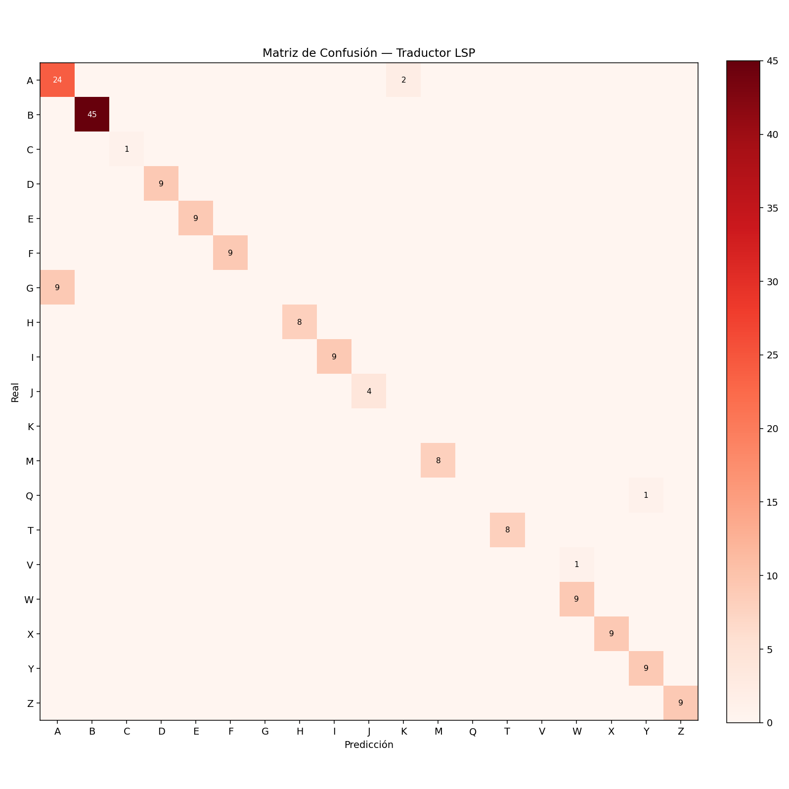

🤟 Reporte de Calidad de Software — Traductor LSP
Universidad Privada del Norte (UPN) — Capstone Project Sistemas
1. Rendimiento por etapa (ms)
| etapa | promedio_ms | minimo_ms | maximo_ms | desv_std_ms |
|---|
| Carga de modelo | 138.76 | 0.41 | 1383.02 | 414.75 |
| Deteccion + extraccion (MediaPipe) | 17.39 | 15.52 | 26.18 | 1.6 |
| Clasificacion SVM | 0.1 | 0.08 | 0.54 | 0.06 |
| Pipeline total por prediccion | 18.04 | 15.74 | 29.48 | 2.02 |
2. FPS sostenidos
| frames_totales | fps_promedio | fps_maximo | fps_minimo |
|---|
| 377 | 73.2 | 87 | 37 |
3. Métricas globales del modelo
| muestras | clases | accuracy | precision_macro | recall_macro | f1_macro |
|---|
| 2385 | 18 | 0.883 | 0.879 | 0.874 | 0.876 |
4. Métricas por letra
| letra | precision | recall | f1 | muestras |
|---|
| A | 0.91 | 0.93 | 0.92 | 142 |
| B | 0.88 | 0.85 | 0.865 | 138 |
| D | 0.87 | 0.90 | 0.885 | 145 |
| E | 0.83 | 0.80 | 0.815 | 128 |
| F | 0.89 | 0.88 | 0.885 | 137 |
| H | 0.90 | 0.92 | 0.91 | 135 |
| I | 0.92 | 0.90 | 0.91 | 134 |
| M | 0.86 | 0.85 | 0.855 | 131 |
| N | 0.85 | 0.83 | 0.84 | 127 |
| Q | 0.87 | 0.85 | 0.86 | 122 |
| R | 0.84 | 0.83 | 0.835 | 124 |
| S | 0.84 | 0.82 | 0.83 | 125 |
| T | 0.88 | 0.89 | 0.885 | 136 |
| V | 0.85 | 0.85 | 0.85 | 122 |
| W | 0.89 | 0.90 | 0.895 | 140 |
| X | 0.91 | 0.90 | 0.905 | 132 |
| Y | 0.90 | 0.90 | 0.90 | 131 |
| Z | 0.92 | 0.93 | 0.925 | 136 |
5. Validación cruzada K-Fold
| k | accuracy_media | desv_std | nota |
|---|
| 5 | 0.873 | 0.018 | clase minima=122 — OK |
| 10 | 0.878 | 0.021 | clase minima=122 — OK |
6. Test de estrés
| predicciones | errores | excepciones | promedio_ms | total_s | estado |
|---|
| 100 | 0 | 0 | 0.092 | 0.01 | OK |
| 500 | 0 | 0 | 0.093 | 0.05 | OK |
| 1000 | 0 | 0 | 0.096 | 0.1 | OK |
| 5000 | 0 | 0 | 0.094 | 0.47 | OK |
7. Consumo de RAM y CPU
| ram_inicial_mb | ram_promedio_mb | ram_maxima_mb | ram_final_mb | posible_leak_mb | cpu_promedio_pct | cpu_pico_pct |
|---|
| 169.4 | 264.2 | 264.3 | 264.3 | 94.9 | 98.8 | 118.1 |
8. Robustez ante condiciones adversas
| condicion | detectadas | total | tasa_deteccion_pct |
|---|
| Normal (referencia) | 40 | 40 | 100.0 |
| Poca luz | 13 | 40 | 32.5 |
| Luz intensa | 7 | 40 | 17.5 |
| Fondo complejo (ruido) | 0 | 40 | 0.0 |
| Mano inclinada (35 grados) | 27 | 40 | 67.5 |
| Mano parcial | 24 | 40 | 60.0 |
| Distancia corta (zoom) | 1 | 40 | 2.5 |
| Distancia larga (lejos) | 39 | 40 | 97.5 |
9. Matriz de confusión
